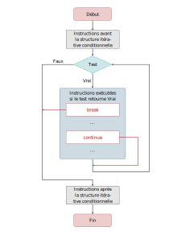

Chap. 06 — Contrôle du flot d’exécution d’un programme, les structures itérativesStructures itérativesRemarques.La boucle Tant que, l’instruction whilePrésentationSyntaxe de la boucle Tant que en PythonLa bouclePour (en fait Pour Chaque)PrésentationSyntaxe en PythonAttention !Syntaxe.L'itérable rangeAttention !Les instructions break et continuebreakcontinueEn résuméExercices du chapitre (version while)Exercice 1Exercice 2Exercice 3Exercice 4Exercice 5Exercice 6Exercice 7Exercice 8Exercice 9Exercice 10Exercice 11Exercice 12Exercice 13Exercice 14Exercice 15Exercice 16Exercice 17Exercices du chapitre (version for)Exercices de réflexion du chapitreExercice : Code ISBNExercice : Le taxi de RamanujanExercice : Calendrier (très difficile)
Ce chapitre reprend l'étude de structures de contrôles, c'est à dire d'instructions qui permettent de modifier le « flot d'exécution implicite » d'un programme.
Après les structures conditionnelles (ou alternatives), les structures itératives (ou boucles) sont introduites.
- Les boucles sont des instructions répétitives. Comme les tests conditionnels, elles nécessitent la définition de blocs d’instructions.
- Les instructions de ces blocs sont répétées tant qu'une condition d’arrêt n'est pas vérifiée.
- Chaque passage dans la boucle s'appelle une itération.
Les langages de programmation proposent généralement deux types de boucles, les boucles déterministes et les boucles non déterministes :
- Une boucle déterministe (ou boucle
Pour) est une boucle dont on connaît à l’avance le nombre d’itérations.
Une bouclePourutilise une variable pour compter le nombre d'itérations effectuées : le compteur de boucle.- Une boucle non déterministe (ou boucle conditionnelle) est une boucle dont on ne connaît pas à l’avance le nombre d’itérations. La boucle s'arrête si une condition d’arrêt intervient mais on ne sait pas à l'avance quand !
Les boucles non déterministes les plus courantes sont les bouclesTant Que,Faire Tant QueetRépéter Jusqu’à.
Tant que.Pour dans Python est particulière, c’est en fait une boucle Pour chaque.Tant que, l’instruction whileL’expression conditionnelle d’une boucle
Tant queest évaluée au début de chaque itération, ce qui permet de l’exécuter un nombre quelconque de fois. Il est même possible que les instructions contenues dans cette structure ne soient jamais exécutées si l’expression booléenne vautFauxdès sa première évaluation.Les instructions d’une boucle
Tant quesont exécutées tant que l’expression booléenne est évaluée àVrai.
while expression_booléenne: instructions à répéterPour (en fait Pour Chaque)La boucle Pour Chaque s’écrit for en Python. Cette structure de boucle n’existe pas dans tous les langages. Dans la plupart des langages l’instruction for implémente la bouclePour .
Les domaines d’application de cette boucle sont, par exemple, le parcours des tableaux, puisqu’on connaît le nombre de cases qui les constituent, ou les traitements de données, leur nombre étant connu à l'avance.
À l’issue de chaque itération la valeur du compteur est incrémentée automatiquement.
La syntaxe de la boucle Pour chaque en Python est illustrée sur un exemple. La fonction ci-dessous retourne une chaîne de caractères formée de la liste des éléments de la table du nombre n passé en argument.
xxxxxxxxxxdef table_de(n: int) -> str: reponse = "" for element in range(1, 11): reponse += str(n * element) + " " # Transformation d'un nombre en chaîne return reponseLa variable qui sert de compteur de boucle (element dans l’exemple précédent) ne doit jamais être modifiée dans la boucle, ce qui exclut la possibilité de changer sa valeur par une affectation. Dans le cas contraire, le comportement de la boucle est indéterminé ; elle peut très bien s’arrêter immédiatement, comme devenir infinie.
Le mot clé for permet de créer une boucle Pour chaque. Python parcourt alors les éléments d’un itérable (comme une séquence, une liste, un tulle, etc.) et se termine quand tous les éléments sont épuisés. Sa syntaxe est :
xxxxxxxxxxfor element in itérable: suite_à_répéterÀ chaque itération, la variable d’itération
elementprend la valeur de l’élément courant de l’itérable (séquence, liste, tulle, etc.) pour pouvoir l’utiliser dans le blocsuite_à_répéter.
rangeL’itérable
rangepermet d’utiliser la bouclePour chaquedu langage Python d’une façon comparable aux bouclesPourdes autres langages, c’est à dire en incrémentant une variable et en arrêtant la boucle une fois que la valeur finale a été atteinte.L’itérable
rangegénère à la volée, et selon le besoin, des nombres entiers compris entre une valeur de départdébutet une valeur finalefin, par pas depas.
Trois syntaxes sont possibles :
xxxxxxxxxxrange(debut, fin, pas)xxxxxxxxxxrange(debut, fin)xxxxxxxxxxrange(fin)De façon générale, tous les intervalles, en Python, sont du type [debut, fin[.
Exemples.
xxxxxxxxxx>>> for i in range(1,10,1): print(i, end=' ') 1 2 3 4 5 6 7 8 9 # 10 ne fait pas parti des nombres générés>>> for i in range(1,10): print(i, end=' ') 1 2 3 4 5 6 7 8 9 # un pas de 1 n'a pas à être précisé>>> for i in range(1,10,3): print(i, end=' ') 1 4 7 # incrémentation par pas de 3>>> for i in range(10): print(i, end=' ') # si un seul argument, c'est la limite supérieure 0 1 2 3 4 5 6 7 8 9 # limite supérieure = nombre de termes ici>>> for i in range(10,1,-1): print(i, end=' ') 10 9 8 7 6 5 4 3 2 # le pas peut être négatif (suite décroissante)>>> for i in range(10,-15,-3): print(i, end=' ') 10 7 4 1 -2 -5 -8 -11 -14 # nombres générés peuvent être négatifsbreak et continuebreakL’instruction
breakmet fin à la boucle courante et reprend l’exécution à la première instruction qui suit la structure itérative.
On l’utilise généralement quand une condition externe est déclenchée (habituellement en testant avec une instruction if), exigeant une sortie immédiate de la boucle. Elle s’utilise aussi bien dans les boucles Pour que dans les boucles Tant Que.
L’instruction break est très utile pour quitter des « boucles infinies », créées par exemple à l’aide de l’entête : while True:.
Exemple. Les fonctions ci-dessous déterminent (par une méthode loin d’être efficace) le plus grand diviseur d’un nombre entré par l’utilisateur (variable nbre). On teste tous les nombres qui pourraient être des diviseurs du nombre, en utilisant la variable diviseur et en la décrémentant d’une unité pour chaque valeur qui ne divise pas le nombre. Le premier nombre qui divise exactement nbre est le plus grand diviseur. Ce nombre trouvé, il est inutile de poursuivre la boucle, on la quitte grâce à l’instruction break. Les deux fonctions utilisent les deux structures de boucles implémentées en Python ; break peut donc être utilisée quelle que soit la boucle.
xdef plus_grand_diviseur(nbre: int) -> str: diviseur = nbre - 1 while diviseur > 0: if nbre % diviseur == 0: break diviseur -= 1 reponse = "Le plus grand diviseur de {} est {}.".format(nbre, diviseur) return reponsedef plus_grand_diviseur_2(nbre: int) -> str: for diviseur in range(nbre - 1, 0, -1): if nbre % diviseur == 0: break reponse = "Le plus grand diviseur de {} est {}.".format(nbre, diviseur) return reponsecontinueL’instruction
continuetermine ou ignore le reste des instructions de l’itération courante et remonte au début : le test pour une boucle non déterministe, l’itération suivante (s’il reste des itérations à parcourir) pour une boucle déterministe.
Exemple. La fonction ci-dessous fournit une illustration (peut pertinente il est vrai !) de l’utilisation de l’instruction continue en retournant une chaîne de caractères constituée de tous les nombres qui ne divisent pas un nombre passé en argument.
xxxxxxxxxxdef non_diviseur(nbre: int) -> str: reponse = "" diviseur = nbre - 1 while diviseur > 0: if nbre % diviseur == 0: diviseur -= 1 continue reponse += "{} ".format(diviseur) diviseur -= 1 return reponsedef non_diviseur_2(nbre: int) -> str: reponse = "" for diviseur in range(nbre - 1, 0, -1): if nbre % diviseur == 0: continue reponse += "{} ".format(diviseur) return reponseRemarque. Comme dit en introduction de ces codes, l’exemple choisi n’est pas très pertinent, on peut écrire plus clairement (sans utiliser continue):
xxxxxxxxxxdef non_diviseur_2(nbre: int) -> str: reponse = "" for diviseur in range(nbre - 1, 0, -1): if nbre % diviseur != 0: reponse += "{} ".format(diviseur) return reponseLes deux fonctions dans l’exemple ci-dessus utilisent les deux structures de boucles implémentées en Python ; continue peut donc être utilisée quelle que soit la boucle.

while)Remarque. Dans cette première série d'exercices n'utiliser que la structure Tant que.
Soit la fonction suivante :
xxxxxxxxxxdef inconnue(a: int, b: int) -> int: """ Fonction dont il faut déterminer l'action. """ r = a % b while r != 0: a = b b = r r = a % b return b
while r != 0:
a = b
b = r
r = a % b
r = a % b.Soit la fonction suivante :
xxxxxxxxxxdef inconnue_deux(a: int) -> int: """ Fonction dont il faut déterminer l'action. """ b = 1 i = 2 while i <= a: b *= i i += 1 return bi et quelle est sa valeur en sortie de boucle ? Combien de tours sont réalisés ?
while i <= a:
b *= i
i += 1
i += 1.Écrire et exécuter une fonction qui retourne une chaîne de caractères formée par une suite de 12 nombres entiers dont chaque terme est égal au triple du terme précédent, à partir du premier entier a passé en argument. La spécification de la fonction est :
xxxxxxxxxxdef triple_du_precedent(a: int) -> str: """ Retourne une chaîne de caractères formée par une suite de 12 entiers dont chaque terme est égal au triple du précédent, à partir du premier entier a, positif, passé en argument. >>> triple_du_precedent(1) '1 3 9 27 81 243 729 2187 6561 19683 59049 177147 ' >>> triple_du_precedent(5) '5 15 45 135 405 1215 3645 10935 32805 98415 295245 885735 ' """xxxxxxxxxxdef triple_du_precedent(a: int) -> str: """ Retourne une chaîne de caractères formée par une suite de 12 entiers dont chaque terme est égal au triple du précédent, à partir du premier entier a, positif, passé en argument. >>> triple_du_precedent(1) '1 3 9 27 81 243 729 2187 6561 19683 59049 177147 ' >>> triple_du_precedent(5) '5 15 45 135 405 1215 3645 10935 32805 98415 295245 885735 ' """ reponse = "" # Initialisation de la chaîne à retourner compteur = 1 # Initialisation du compteur val_max_compteur = 12 # Valeur maximale pour le compteur while(compteur <= val_max_compteur): reponse += str(a) + " " # Ajout de chaque nombre à la chaîne a *= 3 compteur += 1 return reponseÉcrire et exécuter une fonction qui retourne une chaîne de caractères formée par une suite des 10 premiers termes de la table de multiplication d'un entier a passé en argument. La spécification de la fonction est :
xxxxxxxxxxdef multiplication(a: int) -> str: """ Retourne une chaîne de caractères formées des 10 premiers nombres de la table de multiplication de a. >>> multiplication(7) '7 14 21 28 35 42 49 56 63 70 ' """def multiplication(a: int) -> str: """ Retourne une chaîne de caractères formées des 10 premiers nombres de la table de multiplication de a. >>> multiplication(7) '7 14 21 28 35 42 49 56 63 70 ' """ reponse = "" compteur = 1 val_max_compteur = 10 while compteur <= val_max_compteur: reponse += str(a * compteur) + " " compteur += 1 return reponseÉcrire et exécuter une fonction qui retourne une chaîne de caractères formée par une suite des 10 premiers termes de la table de multiplication d'un entier a passé en argument en signalant au passage (à l'aide d'un astérisque) ceux qui sont des multiples de 3. La spécification de la fonction est :
xxxxxxxxxxdef multiplication_multiple_trois(a: int) -> str: """ Retourne une chaîne de caractères formées des 10 premiers nombres de la table de multiplication de a en signalant au passage ceux qui sont des multiples de 3. >>> multiplication_multiple_trois(2) '2 4 6* 8 10 12* 14 16 18* 20 ' >>> multiplication_multiple_trois(7) '7 14 21* 28 35 42* 49 56 63* 70 ' """def multiplication_multiple_trois(a: int) -> str: """ Retourne une chaîne de caractères formées des 10 premiers nombres de la table de multiplication de a en signalant au passage ceux qui sont des multiples de 3. >>> multiplication_multiple_trois(2) '2 4 6* 8 10 12* 14 16 18* 20 ' >>> multiplication_multiple_trois(7) '7 14 21* 28 35 42* 49 56 63* 70 ' """ reponse = "" # Initialisation de la chaîne à retourner compteur = 1 val_max_compteur = 10 while compteur <= val_max_compteur: valeur = a * compteur reponse += str(valeur) if valeur % 3 == 0: # si multiple de 3 reponse += "*" # ajouter astérisque reponse += " " # pour séparer les valeurs compteur += 1 return reponseÉcrire et exécuter une fonction qui calcule les 50 premiers termes de la table de multiplication d'un nombre a passé en argument mais qui retourne une chaîne de caractères formée seulement par ceux qui sont des multiples de 7. La spécification de la fonction est :
xxxxxxxxxxdef multiplication_multiple_sept(a: int) -> str: """ Calcule les 50 premiers termes de la table de a mais retourne une chaîne de caractères contenant uniquement les multiples de 7. >>> multiplication_multiple_sept(2) '14 28 42 56 70 84 98 ' >>> multiplication_multiple_sept(9) '63 126 189 252 315 378 441 ' """def multiplication_multiple_sept(a: int) -> str: """ Calcule les 50 premiers termes de la table de a mais retourne une chaîne de caractères contenant uniquement les multiples de 7. >>> multiplication_multiple_sept(2) '14 28 42 56 70 84 98 ' >>> multiplication_multiple_sept(9) '63 126 189 252 315 378 441 ' """ reponse = "" # Initialisation de la chaîne à retourner compteur = 1 val_max_compteur = 50 while compteur <= val_max_compteur: valeur = a * compteur if valeur % 7 == 0: # si multiple de 3 reponse += str(valeur) + " " # ajouter valeur compteur += 1 return reponseÉcrire et exécuter une fonction qui calcule et retourne une chaîne de caractères formée de la liste des diviseurs du nombre passé en argument. La spécification de la fonction est :
xxxxxxxxxxdef diviseurs(a: int) -> str: """ Retourne une chaîne de caractères formée de la liste des diviseurs de a. >>> diviseurs(18) '18 9 6 3 2 1 ' """def diviseurs(a: int) -> str: """ Retourne une chaîne de caractères formée de la liste des diviseurs de a. >>> diviseurs(18) '18 9 6 3 2 1 ' """ n = a - 1 reponse = "{} ".format(a) while n > 0: if a % n == 0: reponse += str(n) + " " n -= 1 return reponseÉcrire une fonction qui retourne une chaîne de caractère formée des 10 premiers termes de la table de multiplication de 1 à 10. Le caractère de passage à la ligne \n doit être utilisé afin de séparer les différentes tables (de 2, de 3, ...).
Remarque : Utiliser deux boucles imbriquées.
La spécification de la fonction est :
xxxxxxxxxxdef table_multiplication() -> str: """ Retourne la table de multiplication des nombres de 1 à 10. """Remarque : Afin de visualiser le résultat sous forme d'un tableau, utiliser l'instruction suivante, dans la console, pour tester la fonction :
xxxxxxxxxx>>> print(table_multiplication())def table_multiplication() -> str: """ Retourne la table de multiplication des nombres de 1 à 10. """ i = 1 # Compteur 1 j = 1 # Compteur 2 reponse = "" val_max = 10 while i <= val_max: while j <= val_max: reponse += "{} ".format(i * j) j += 1 reponse += "\n" i += 1 j = 1 return reponseÉcrire et exécuter une fonction qui demande 10 nombres à l'utilisateur et qui détermine lequel est le plus grand et lequel est le plus petit. Les deux résultats sont retournés au sein d'une unique chaîne de caractères.
Remarque : la fonction qui permet de récupérer du texte entré au clavier est input :
xxxxxxxxxxvaleur = float(input("Entrez votre valeur : ")){{% note warning %}}
La fonction input retourne toujours une chaîne de caractères. Il est donc nécessaire d'effectuer une conversion si ce que l'utilisateur a entré est d'un autre type.
{{% /note %}}
La specification de la fonction est :
xxxxxxxxxxdef plus_grand_plus_petit() -> str: """ Demande à l'utilisateur d'entrer 10 valeurs et retourne une chaîne de caractères formée des deux valeurs max et min. """def plus_grand_plus_petit() -> str: """ Demande à l'utilisateur d'entrer 10 valeurs et retourne une chaîne de caractères formée des deux valeurs max et min. """ valeur = float(input("Entrez la valeur 1 : ")) valeur_plus_grande = valeur valeur_plus_petite = valeur nbre_valeurs = 10 i = 2 # Compteur while i <= nbre_valeurs: valeur = float(input("Entrez la valeur {} : ".format(i))) if valeur > valeur_plus_grande: valeur_plus_grande = valeur elif valeur < valeur_plus_petite: valeur_plus_petite = valeur i += 1 reponse = "max : {}, min : {}".format(valeur_plus_grande, valeur_plus_petite) return reponseReprendre l'exercice précédent mais en faisant en sorte que le nombre de valeurs demandées à l'utilisateur soit passé en argument à la fonction.
def plus_grand_plus_petit(nbre_valeurs: int) -> str: """ Demande à l'utilisateur d'entrer nbre_valeurs valeurs et retourne une chaîne de caractères formée des deux valeurs max et min. """ valeur = float(input("Entrez la valeur 1 : ")) valeur_plus_grande = valeur valeur_plus_petite = valeur i = 2 # Compteur while i <= nbre_valeurs: valeur = float(input("Entrez la valeur {} : ".format(i))) if valeur > valeur_plus_grande: valeur_plus_grande = valeur elif valeur < valeur_plus_petite: valeur_plus_petite = valeur i += 1 reponse = "max : {}, min : {}".format(valeur_plus_grande, valeur_plus_petite) return reponseÉcrire et exécuter une fonction qui demande à l'utilisateur d'entrer 10 notes et qui retourne la moyenne de ces notes. La spécification de la fonction est :
xxxxxxxxxxdef moyenne() -> float: """ Demande 10 notes à l'utilisateur et retourne la moyenne. """def moyenne() -> float: """ Demande 10 notes à l'utilisateur et retourne la moyenne. """ somme = 0 # Initialisation de la somme nbre_notes = 10 i = 1 # Compteur while i <= nbre_notes: note = float(input("Entrez la note {} : ".format(i))) somme += note i += 1 return somme / nbre_notesModifier le programme précédent de façon à ce que le nombre de notes à prendre en compte soit passé en argument de la fonction.
def moyenne(nbre_notes: int) -> float: """ Demande nbre_notes notes à l'utilisateur et retourne la moyenne. """ somme = 0 # Initialisation de la somme i = 1 # Compteur while i <= nbre_notes: note = float(input("Entrez la note {} : ".format(i))) somme += note i += 1 return somme / nbre_notesModifier le programme précédent de façon à ce que l'utilisateur n'ait pas à indiquer le nombre de notes qu'il souhaite saisir. Une note négative terminer la saisie.
Remarque : la fonction doit afficher le nombre de notes saisies, elle retourne donc une chaîne de caractères.
def moyenne_ter() -> str: """ Demande des notes à l'utilisateur et retourne la moyenne. La saisie cesse lorsque la note entrée est négative. """ somme = 0 nbre_notes = 0 while True: note = float(input("Entrez la note {} : ".format(nbre_notes + 1))) if note < 0: break somme += note nbre_notes += 1 reponse = "Nbre de notes : {}, moyenne : {:.2f}".format(nbre_notes, somme / nbre_notes) return reponseÉcrire et exécuter une fonction qui simule un tirage du Loto (s'aider de l'exercice 12 du chapitre 02). La spécification de la fonction est
xxxxxxxxxxdef loto_naif() -> str: """ Retourne 6 entiers sélectionnés aléatoirement dans l'intervalle [1, 49]. """Remarque. Normalement, lorsqu'un numéro est tiré, il ne peut pas apparaître à nouveau. On acceptera cependant qu'un même numéro puisse apparaitre plusieurs fois puisqu'on ne connaît pas encore de structure de contrôle qui permet de facilement « stocker » plusieurs valeurs.
def loto_naif() -> str: """ Retourne 6 entiers sélectionnés aléatoirement dans l'intervalle [1, 49]. """ import random reponse = "" i = 1 # Compteur nbre_boules = 6 # Valeur max du compteur while i <= nbre_boules: boule = random.randint(1, 49) reponse += "{} ".format(boule) i += 1 # Incrémentation du compteur return reponseÉcrire et exécuter une fonction qui tire au hasard un nombre entier compris entre 1 et 50 et demande à l'utilisateur de le deviner.
Cette fonction doit indiquer à l'utilisateur si sa tentative est trop grande ou trop petite et quitter dès l'instant où il a deviné le nombre en indiquant le nombre de tentatives.
Remarque. La fonction ne doit rien retourner, elle doit utiliser la fonction print pour afficher à l'écran les informations. Sa spécification est
xxxxxxxxxxdef devine() -> None: """ Déterminer aléatoirement un nombre compris en 1 et 49 et demande à l'utilisateur de le deviner. La fonction affiche des messages qui aident l'utilisateur dans recherche et quitte dès que cette dernière est fructueuse. """def devine() -> None: """ Déterminer aléatoirement un nombre compris en 1 et 49 et demande à l'utilisateur de le deviner. La fonction affiche des messages qui aident l'utilisateur dans recherche et quitte dès que cette dernière est fructueuse. """ import random nbre_a_deviner = random.randint(1, 50) nbre_tentatives = 0 while True: nbre = int(input("Proposition n° {} : ".format(nbre_tentatives + 1))) nbre_tentatives += 1 if nbre == nbre_a_deviner: print("Bravo, le nombre a été deviné en {} tentatives.".format(nbre_tentatives)) break elif nbre > nbre_a_deviner: print("Trop grand !") else: print("Trop petit ! ")Écrire et exécuter une fonction qui affiche l'alphabet à l'endroit si elle reçoit l'argument "croissant" ou à l'envers si elle reçoit l'argument "decroissant".
Remarque. On peut obtenir le code décimal d'un caractère à l'aide de la fonction ord. À l'opposé, le caractère correspondant à un entier naturel dans la table ASCII est obtenu (si possible) à l'aide de la fonction chr.
La spécification de la fonction est
xxxxxxxxxxdef alphabet(sens: str) -> str: """ Retourne les lettres de l'alphabet en fonction de la chaîne de caractères passée en argument. Les valeurs possibles pour cet argument sont 'croissant' ou 'decroissant'. """def alphabet(sens: str) -> str: """ Retourne les lettres de l'alphabet en fonction de la chaîne de caractères passée en argument. Les valeurs possibles pour cet argument sont 'croissant' ou 'decroissant'. """ nbre_lettres = 26 i = 1 # Compteur reponse = "" if sens == "croissant": indice = 97 elif sens == "decroissant": indice = 122 else: raise Exception("Il faut choisir 'croissant' ou 'decroissant'.") while i <= nbre_lettres: reponse += chr(indice) if sens == "croissant": indice += 1 else: indice -= 1 i += 1 return reponseÉcrire et exécuter une fonction qui détermine les n premiers termes de la « suite de Fibonacci » définie par :
Cette fonction doit recevoir en argument la valeur de et retourner la suite de nombres sous forme de chaîne de caractères. Spécification de la fonction :
xxxxxxxxxxdef fibo(n: int) -> str: """ Retourne les n premiers termes de la suite de Fibonacci. """def fibo(n: int) -> str: """ Retourne les n premiers termes de la suite de Fibonacci. """ if n == 1: reponse = "1" elif n == 2: reponse = "1 1" else: u = 1 # u_{n-2} v = 1 # u_{n-1} reponse = "1 1 " rang = 3 while rang <= n: w = u + v # u_{n} u = v # Mise à jour de u_{n-2} v = w # Mise à jour de u_{n-1} reponse += str(w) + " " rang += 1 return reponsefor)Reprendre les exercices 3, 4, 5, 6, 7, 9, 10, 11, 12, 14, 16 de la section précédente et les ré-écrire à l’aide de l’instruction for.
def triple_du_precedent(a: int) -> str: """ Retourne une chaîne de caractères formée par une suite de 12 entiers dont chaque terme est égal au triple du précédent, à partir du premier entier a, positif, passé en argument. >>> triple_du_precedent(1) '1 3 9 27 81 243 729 2187 6561 19683 59049 177147 ' >>> triple_du_precedent(5) '5 15 45 135 405 1215 3645 10935 32805 98415 295245 885735 ' """ reponse = "" # Initialisation de la chaîne à retourner val_max_compteur = 12 # Valeur maximale pour le compteur for i in range(1, val_max_compteur + 1): reponse += "{} ".format(a) a *= 3 return reponsedef multiplication(a: int) -> str: """ Retourne une chaîne de caractères formées des 10 premiers nombres de la table de multiplication de a. >>> multiplication(7) '7 14 21 28 35 42 49 56 63 70 ' """ reponse = "" # Initialisation de la chaîne à retourner val_max_compteur = 10 for i in range(1, val_max_compteur + 1): reponse += str(a * i) + " " return reponsedef multiplication_multiple_trois(a: int) -> str: """ Retourne une chaîne de caractères formées des 10 premiers nombres de la table de multiplication de a en signalant au passage ceux qui sont des multiples de 3. >>> multiplication_multiple_trois(2) '2 4 6* 8 10 12* 14 16 18* 20 ' >>> multiplication_multiple_trois(7) '7 14 21* 28 35 42* 49 56 63* 70 ' """ reponse = "" # Initialisation de la chaîne à retourner val_max_compteur = 10 for i in range(1, val_max_compteur + 1): valeur = a * i reponse += str(valeur) if valeur % 3 == 0: # si multiple de 3 reponse += "*" # ajouter astérisque reponse += " " # pour séparer les valeurs return reponsedef multiplication_multiple_sept(a: int) -> str: """ Calcule les 50 premiers termes de la table de a mais retourne une chaîne de caractères contenant uniquement les multiples de 7. >>> multiplication_multiple_sept(2) '14 28 42 56 70 84 98 ' >>> multiplication_multiple_sept(9) '63 126 189 252 315 378 441 ' """ reponse = "" # Initialisation de la chaîne à retourner val_max_compteur = 50 for i in range(1, val_max_compteur + 1): valeur = a * i if valeur % 7 == 0: # si multiple de 3 reponse += str(valeur) + " " # ajouter valeur return reponsedef diviseurs(a: int) -> str: """ Retourne une chaîne de caractères formée de la liste des diviseurs de a. >>> diviseurs(18) '18 9 6 3 2 1 ' """ reponse = "" for n in range(a, 0, -1): if a % n == 0: reponse += str(n) + " " return reponsedef table_multiplication() -> str: """ Retourne la table de multiplication des nombres de 1 à 10. """ reponse = "" val_max = 10 for i in range(1, val_max + 1): for j in range(1, val_max + 1): reponse += "{} ".format(i * j) reponse += "\n" return reponsedef plus_grand_plus_petit(nbre_valeurs: int) -> str: """ Demande à l'utilisateur d'entrer nbre_valeurs valeurs et retourne une chaîne de caractères formée des deux valeurs max et min. """ valeur = float(input("Entrez la valeur 1 : ")) valeur_plus_grande = valeur valeur_plus_petite = valeur for i in range(2, nbre_valeurs + 1): valeur = float(input("Entrez la valeur {} : ".format(i))) if valeur > valeur_plus_grande: valeur_plus_grande = valeur elif valeur < valeur_plus_petite: valeur_plus_petite = valeur reponse = "max : {}, min : {}".format(valeur_plus_grande, valeur_plus_petite) return reponseif __name__ == "__main__": import doctest doctest.testmod()L'« International Standard Book Number » (ISBN) est un code à dix chiffres qui identifie de manière unique un livre. Le chiffre le plus à droite de ce code est la somme de contrôle (Wikipedia) : il est calculé, de manière unique, à partir des valeurs des neuf autres chiffres. Sa valeur est telle que soit un multiple de 11 (ici représente la valeur du ième chiffre du code, en partant de la droite).
Exemple. La somme de contrôle du code commençant par 020131452 est 5 puisque 5 est la seule valeur de comprise entre 0 et 10 (exclu) telle que soit un multiple de 11.
Écrire une fonction qui demande à l'utilisateur les 9 premiers chiffres d'un code ISBN et qui retourne le code ISBN sous forme d'une chaîne de caractères.
Srinivasa Ramanujan était un mathématicien indien célèbre pour son intuition dans la manipulation des nombres. Alors que le mathématicien anglais G. H. Hardy lui rendait visite, ce dernier remarqua que le numéro du taxi dans lequel ils se déplaçaient était 1729 : « Voilà un nombre sans relief ! », déclara-t-il alors. Ramanujan répondit aussitôt : « Pas du tout Hardy ! Pas du tout ! C'est au contraire un nombre très intéressant. C'est le plus petit nombre que l'on peut exprimer comme la somme de deux nombres au cube, et ce de deux façons différentes ! »
L'objectif de la fonction que vous allez écrire est de trouver la liste de tous les entiers plus petits (ou égaux à) qu'un nombre — choisi par l'utilisateur — qui peuvent être exprimés comme la somme de deux nombres au cube, de deux façons différentes.
En d'autres termes, le problème consiste à trouver quatre entiers , , et , plus petits que , tels que .
Aide. Utiliser quatre boucles imbriquées.
Écrire et exécuter une fonction qui affiche un calendrier qui va du 1er janvier 2001 au 31 décembre 3000. Description.
Exemple de sortie.
1 lundi 1 janvier 2001 2 mardi 2 janvier 2001 ... 365241 mardi 30 décembre 3000 365242 mercredi 31 décembre 3000